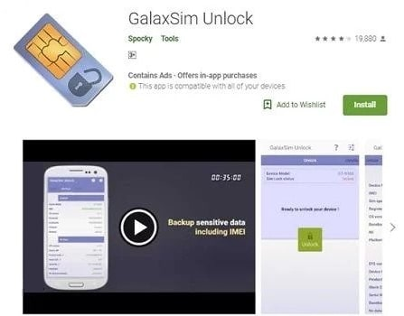

Here is our first app that can help you easily unlock your SIM for Samsung use. The many benefits of this application are mindboggling. Here are some of the benefits: 1. It is available in play store 2. It is free to download and you don’t have to pay to use it. 3. Supports a large of phones from the Galaxy family 4. It gives detailed information of the lock status of the phone you are working with. 5. You will also need to undertake simple processes to use it in unblocking the required SIM. 6. Lastly, you will also be able to backup your and restore your data at no cost. 
1. Download the Galaxsim unlock app from play store 2. After the download, you need to launch the app 3. After launching the app, run it on your phone to see the lock status.This will guide you on what to do next.